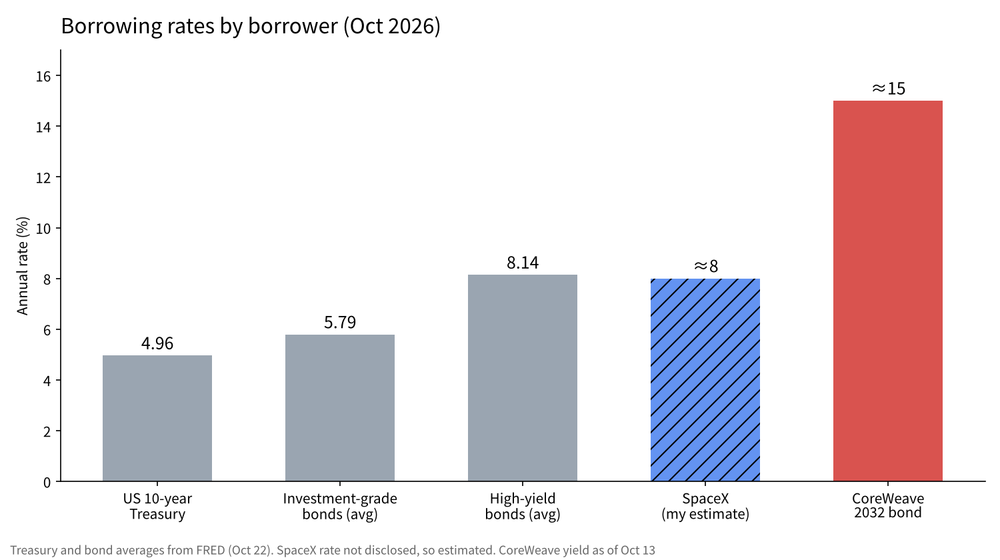
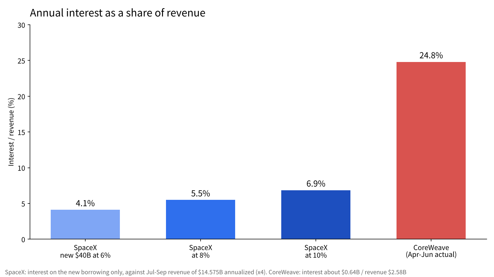

At what rate did SpaceX borrow $40 billion? Set against CoreWeave at 15%
On October 25, Musk wrote on X that SpaceX had closed $40 billion in borrowing to buy GPUs. In the same October, the bonds of the AI cloud company CoreWeave briefly yielded 15%.
Both are debts aimed at AI computing power. Yet the price lenders put on them is completely different.
In this article, from Japan, I use SpaceX's results and US interest-rate statistics to estimate the level at which SpaceX borrowed, set it beside CoreWeave, and check whether it is "high or low."

What was announced, and what is still unknown
What has been made public about SpaceX is that the total is $40 billion, that it is mainly debt that can be repaid before maturity, and that it will be used for Nvidia GPUs. Those GPUs are said to arrive in the first half of 2027. Musk cited being treated as investment grade, along with Starlink and launch revenue, as the reasons.
On the other hand, the rate, maturity, rating agency and underwriting banks could not be confirmed as of this writing. So the rates below are estimates. I state each assumption one by one as I go.
Three rates to use as a yardstick
An estimate needs a yardstick. According to FRED, the St. Louis Fed's database, the US 10-year Treasury yielded 4.96% as of October 22. The average yield on investment-grade corporate bonds was 5.79%, and the average on high-yield bonds (lower-rated corporate bonds) was 8.14%.
The gap between Treasuries and investment grade is 0.83 points, and between investment grade and high yield it is 2.35 points. Even when borrowing the same dollars, rates spread this far depending on how likely the lender thinks repayment is.
Investment grade refers to borrowers rated BBB-minus or above by rating agencies. Because a lot of money, such as pensions and insurers, can by rule lend only to investment grade, being inside it changes how many lenders you can borrow from. Measured as the spread over Treasuries, the investment-grade average is 0.83 points and the high-yield average is 3.18 points.

What CoreWeave's 15% means
CoreWeave is an AI cloud company that rents out data centers filled with GPUs to businesses. Its 9.625% bond due 2032 briefly yielded 15% on October 13. Its 9.75% bond due 2031 also traded at about 14.9%.
A yield more than 5 points above the coupon at issue means the bond's price has fallen that much. According to reports, total debt is about $52 billion, and interest in the April to June quarter was about $0.64 billion, about 25% of revenue of $2.58 billion. The five-year CDS (the insurance premium against default) briefly topped 1,140 basis points. The market is pricing it nearly 7 points above the high-yield average.
Checking SpaceX's ability to repay in its results
In the July to September quarter results SpaceX published, revenue was $14.575 billion, up 161% from a year earlier. Of that, AI-related revenue was $7.56 billion. Net income was $4.404 billion, and capital spending was $19.593 billion, of which $16.444 billion went to AI.
On the balance sheet, cash at the end of September was $51.294 billion and debt and leases were $38.844 billion, so cash exceeds debt. However, capital spending in the October to December quarter is guided at $35 billion to $40 billion, about double the July to September quarter. This $40 billion reads as debt to fund that spending.
If the $40 billion borrowed is first added to cash, cash becomes about $91.3 billion and debt and leases about $78.8 billion, so cash is still larger. But if $35 billion to $40 billion is spent in the October to December quarter, cash falls to about $51.3 billion to $56.3 billion, about $22.5 billion to $27.5 billion below debt. This quarter may be the first in which SpaceX ends up on the debt side, net. I think this is the point lenders look at when they set the rate.
At what rate, and how heavy
Because the rate is not disclosed, I calculate three cases: 6%, 8% and 10%. On $40 billion, annual interest would be $2.4 billion, $3.2 billion and $4.0 billion. Against annualized revenue of about $58.3 billion (the July to September quarter times four), that is 4.1%, 5.5% and 6.9%. The weight is different from CoreWeave's roughly 25%.
| Rate | Annual interest | vs annualized revenue (about $58.3B) | vs annualized net income (about $17.6B) |
|---|---|---|---|
| 6% | $2.4B | 4.1% | 13.6% |
| 8% | $3.2B | 5.5% | 18.2% |
| 10% | $4.0B | 6.9% | 22.7% |
This calculation covers the new borrowing alone and does not include interest on existing debt. Even so, the numbers confirm that interest is small relative to the scale of revenue.
It is worth checking from the profit side too. Against net income of $4.404 billion in the July to September quarter, one quarter of interest at 8% is $0.8 billion, and profit is about 5.5 times that. At CoreWeave, a quarter of revenue goes to interest. Even as the same "debt for AI computing power," the depth of the funds to repay it is completely different.

My estimate of the 8% range
My read is that SpaceX probably borrowed somewhere in the 8% range. With Treasuries around 5%, that is a level about 3 points above them. For investment in the same AI, I see SoftBank borrowing at around 9%.
8% is above the investment-grade average of 5.79% and close to the high-yield average of 8.14%. If it lands at this level despite being called investment grade, I can think of two reasons. One is that it is unlisted, so disclosure is limited. The other is that the debt goes toward GPUs, assets that lose value within a few years. I think it was made repayable before maturity so it can be refinanced when terms improve, through a listing or rising profit.

Why the same AI debt carries different prices
The difference between CoreWeave and SpaceX lies in where the money to repay comes from. CoreWeave's source of repayment is mainly rent from leasing out GPUs. If customers cut their contracts, income and collateral value fall at the same time.
SpaceX has separate income from Starlink and launches, and it uses its computing power itself. What it rents out is the surplus. Between a company that uses its own capacity and rents out the rest, and one that repays from renting alone, lenders see different risk even in the same GPUs. I take the gap between 15% and 8% as the price of that difference.
The other point is how the term of the debt relates to the life of the asset. A new generation of GPUs comes out every two to three years, and rental prices for older generations fall. CoreWeave's bonds mature in 2031 and 2032, but no one knows how much today's GPUs will earn by then. Debt that outlives the asset cannot be repaid unless it can be refinanced. I think SpaceX chose a form it can repay before maturity partly to keep this order the other way around.
How I see it
I hold 1,250 shares of SpaceX. My average cost is $138.07, and the price on October 26 was $144.75. I think this debt does not weaken my reason to hold.
However, I paused my monthly buying in October. The cost of repairing the outer wall of the shared office building I own in Japan has not come out yet. It has nothing to do with SpaceX's debt. Until a business expense comes into view, I stop depositing before selling stocks.
I do not invest in companies that own data centers. When the investment phase ends, I expect AI companies to cut electricity costs and computing procurement first. CoreWeave's 15% may be the market pricing that order ahead of time. Once the rate is disclosed, I will check this estimate against it.
I also set the yardstick for checking in advance. If the disclosed rate is 9% or more, the market sees SpaceX's debt as close to high yield, and I will read it as a sign that recouping the GPU investment takes time. If it is 7% or less, it is treated close to investment grade, and I will read it as Starlink revenue being valued as backing. If it is around 8%, it matches my read. In any case, I will not change my share count right away.
Sources
- SpaceX "Third Quarter 2026 Results" https://s21.q4cdn.com/184289198/files/content_files/SpaceX-Reports-Third-Quarter-2026-Results.pdf
- Investing.com "Musk says SpaceX raised $40 billion in debt for GPUs" (Oct 25, 2026) https://www.investing.com/news/stock-market-news/musk-says-spacex-raised-40-billion-in-debt-for-gpus-4971248
- FRED "Market Yield on U.S. Treasury Securities at 10-Year" https://fred.stlouisfed.org/series/DGS10
- FRED "ICE BofA US Corporate Index Effective Yield" https://fred.stlouisfed.org/series/BAMLC0A0CMEY
- FRED "ICE BofA US High Yield Index Effective Yield" https://fred.stlouisfed.org/series/BAMLH0A0HYM2EY
- Crypto Briefing "CoreWeave shares plunge as bond yields hit 15%" (Oct 2026) https://cryptobriefing.com/coreweave-shares-plunge-bond-yields-15/
- UA.News (via CNBC) "CoreWeave CDS spreads exceed 1,000 bp" (Oct 2026) https://ua.news/en/finansi/spredi-cds-coreweave-perevishchili-1-000-b-p-cnbc
Photos: Iván Martínez Díaz / Taylor Vick (Unsplash). Charts by YUKI CAPITAL
I record my daily numbers and decisions on X.